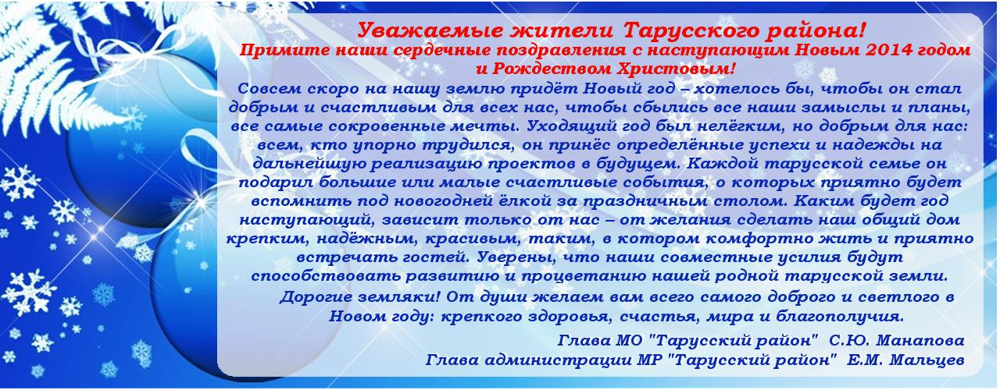

Администрация муниципального района
"ТАРУССКИЙ РАЙОН"
"ТАРУССКИЙ РАЙОН"
НОВОСТИ
Первенство Тарусского района по шашкам

21 декабря 2013 года в спортивном комплексе «Лидер» прошло первенство Тарусского района по русским шашкам в зачёт районной Спартакиады 2013-2014 гг. среди коллективов организаций, предприятий и учреждений Тарусского района.
Шашки в настоящее время очень популярны, в них играют и стар и млад. Вот и в нынешних соревнованиях по русским шашкам приняли участие как высококвалифицированные шашисты, так и начинающие свой путь молодые игроки.
ПодробнееПоследнее изменение:
Новое на сайте:
- Соревнования по баскетболу, посвященные Дню освобождения г. Тарусы от немецко-фашистских захватчиков
- Встреча-урок «Что такое выборы?»
- ОПФР сообщает
- Постановление "Об утверждении плана мероприятий по улучшению демографической ситуации в муниципальном районе "Тарусский район" на 2014-2015 годы" (.pdf, 7,5Mb)
ОБЪЯВЛЕНИЯ
Программа празднования Нового года и Рождества Христова в Тарусе и Тарусском районе
Таруса
- 1 января – Новогодняя ёлка на пл. Ленина, с 1 часа.
- 3 января – Любимые мультфильмы. «Что такое Новый год?» ККЗ, 12 часов.
- 3 января – Новогоднее мероприятие «Волшебный каток – наш спортивный городок». Каток на универсальной спортивной площадке 12:00-17:00.
- 4 января – Любимые мультфильмы. «Двенадцать месяцев». ККЗ, 12 часов.
- 4 января – Фестиваль Фонда Святослава Рихтера «Зимние вечера в Тарусе». Алексей Лундин (скрипка), Татьяна Федосеева (фортепиано). ККЗ, 16 часов.
- 5 января – Социальная ёлка главы администрации МР «Тарусский район». Спектакль Детского молодёжного театра «Экспромт» Людмилы Ивановой (г. Москва). «Ёжик в тумане». ККЗ, 12 часов.
- 5 января – Фестиваль Фонда Святослава Рихтера «Зимние вечера в Тарусе». Фортепианный вечер «Приглашение к танцу». Играет Дмитрий Каприн. ККЗ, 16 часов.
- 7 января – Рождественская ёлка. Спектакль «Рождественский подарок». ККЗ, 11 часов 30 минут.
- 7 января – Рождественский турнир по хоккею. ФОК «Лидер».
- 8 января – Любимые мультфильмы. «Ночь перед Рождеством». ККЗ, 12 часов.
- 8 января – Рождественский турнир по волейболу. ФОК «Лидер».
- 10-12 января – Чемпионат и первенство по кикбоксингу. ФОК «Лидер».
Лопатинский СДК
- 31 декабря – Театрализованное представление «Новый год по-восточному!» 20 часов.
- 1 января – Новогодняя дискотека. С 1 часа.
- 1 января – Праздничное мероприятие «Танцующий праздник». 21 час.
- 2 января – Детское театрализованное представление «А Баба Яга – против!» 14 часов.
- 4 января – Утренник «Зимние забавы». 14 часов.
- 6-7 января – Театральное представление «Коляда».
Похвисневский СДК
- 29 декабря – Утренник «Волшебство Деда Мороза». 16 часов.
- 30 декабря – Новогодний вечер «Как Дед Мороз Снегурочку лечил». 20 часов.
- 1 января – Новогодняя дискотека. С 1 часа.
Алекинский СДК
- 28 декабря – Новогодний утренник «В гостях у сказки». 14 часов.
- 28 декабря – Новогодний огонёк. 18 часов.
- 1 января – Праздничное мероприятие «Новогодний серпантин». С 1.30-ти.
- 1, 2, 5 января – Детские утренники. 15 часов.
- 6 января – Рождественские колядки. 15 часов.
- 7 января – Рождественский вечер. 18 часов.
- 9 января – Утренник «Зимние забавы». 15 часов.
- 10 января – Снежная эстафета. 10 часов.
Вознесенский СДК
- 1 января – Новогодний огонёк. 1 час. 30 минут.
- 4 января – Новогодний утренник. 13 часов.
Петрищевский СДК
- 28 декабря – Утренник «Новогодний бал». 14 часов.
- 31 декабря – Праздничное мероприятие «Карнавальная ночь». 20 часов.
- 1 января – Праздничная ёлка. С 1 часа.
- 4 января – Праздничная дискотека. 20 часов.
- 5 января – Детская дискотека. 17 часов.
- 6 января – Праздничное мероприятие «Весёлое Рождество». 16 часов.
Некрасовский СДК
- 30 декабря – Праздничное мероприятие «Кабы не было зимы…» 19 часов.
- 1 января – Праздничное мероприятие на улице «Забава в деревянной лошадке». С 1 часа.
- 7 января – Рождественское представление, колядки. 18 часов.
Волковской СДК
- 28 декабря – Новогодний вечер отдыха. 19 часов.
- 1 января – Новогодняя дискотека. С 1 часа.
- 2 января – Конкурс для детей «Лучший снеговик». 14 часов.
- 2, 5, 6 января – Детская дискотека. 16 часов.
- 3 января – Детская ёлка, дискотека. 14 часов.
- 5 января – Конкурс рисунков «Прекрасный Новый год!» 14 часов.
- 6 января – Развлекательная программа для детей «Самый умный». 14 часов.
- 7 января – Концертная программа «Встречаем Рождество». 14 часов.
- 8 января – Детская дискотека. 15 часов.
Барятинский СДК
- 29 декабря – Утренник «Волшебная ёлочка». 12 часов.
- 30 декабря – Праздничная программа «Под ёлочкой!» 19 часов.
- 1 января – Бал-маскарад «Под бой курантов!» С 1 часа.
- 3 января – Вечер отдыха «Новогодний огонёк». 19 часов.
- 5 января – Детская игровая программа «Под ёлочкой». 14 часов.
- 6 января – Новогодняя дискотека для школьников «Праздник!» 18 часов.
- 7 января – Утренник «Рождество». 14 часов.
- 8 января – Новогодние уличные гулянья. 14 часов.
- 9 января – Новогодняя дискотека для подростков. 18 часов.
- 10 января – Утренник «Весёлая сказка!» 14 часов.
Новогодние праздничные мероприятия также пройдут в образовательных учреждениях района.

Музыкальный фестиваль "ТАРУСА ЗИМНЯЯ"
- 4 января - суббота (начало в 16:00) Вечер скрипичной музыки. Алексей Лундин (скрипка) Татьяна Федосеева (фортепиано) В программе: А. Паганини, Ф. Крейслер.
- 5 января - воскресенье (начало в 16:00) Фортепианный вечер - "Приглашение к танцу" Дмитрий КАПРИН (фортепиано) В программе: П. Хиндемит, М. Равель, Р. Шуман, К. Вебер
- 8 января - среда (начало в 16:00) Вокальный вечер Владимир БАЙКОВ (бас-баритон) Наталья ПЕТРОЖИЦКАЯ (сопрано) Антонина Кадобнова (фортепиано) В программе: Ф. Шуберт, Р. Шуман, Л. Десятников
Подробная информация - www.richterfoundation.ru
Билеты продаются в кассах киноконцертного зала.
Справки по тел. 8(48435) 2-50-40
Внимание!
Для улучшения транспортного обслуживания населения Тарусского района открыт регулярный внутриобластной маршрут «Калуга - Таруса», по следующему расписанию:
| Отправление из Тарусы (от автостанции) | Отправление из Калуги (автовокзал) |
|---|---|
| 5:50 (кроме воскресенья) | 9:30 (кроме воскресенья) |
| 8:20 | 11:00 |
| 11:25 (кроме воскресенья) | 14:50 (кроме воскресенья); |
| 13:05 | 15:30 |
| 16:35 | 18:30 |
Билеты можно приобретать в кассах индивидуального предпринимателя Дремина В.И.